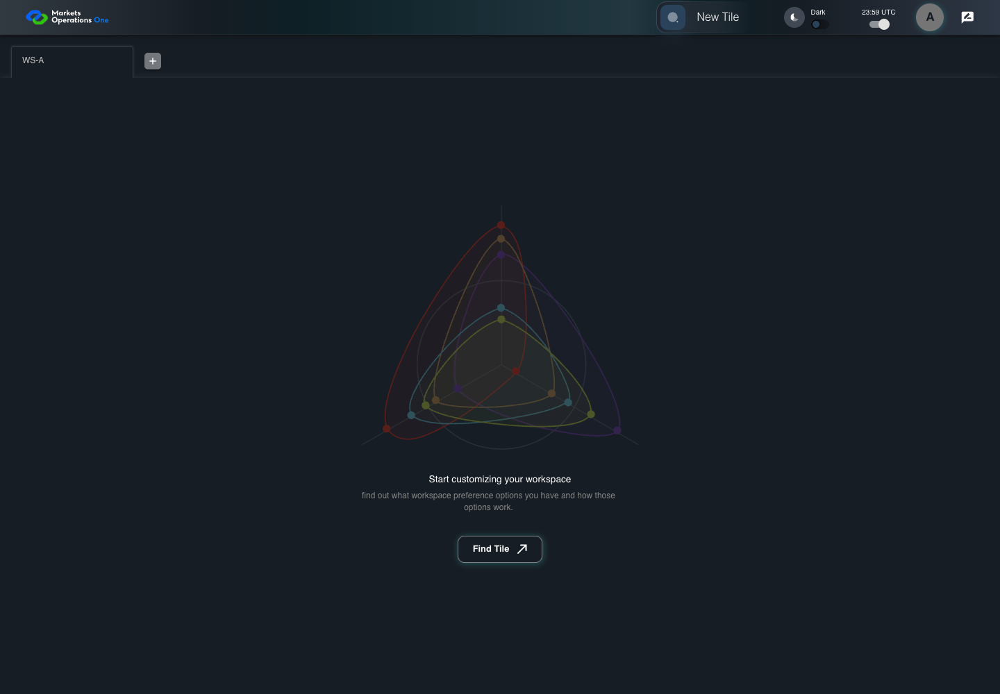

AUTH-084 timeout refresh cutoff
PASS · application/run-084/auth-084-timeout-refresh-cutoff-17c528533e10-attempt-1 · ACTUAL_APPLICATION_LOCAL_SERVICES
Actual MFE; Playwright clock; controlled API responses; unsigned browser-only credentials. No natural lifecycle or BFF expiry claim.
2026-10-22T07:37:05.746Z to 2026-10-22T07:37:08.676Z
Assertions and result · Artifact manifest · Exact run inputs and source hashes
Result SHA-256:22dd687563a50632a9ed866cb61b1529ab7d9a06289cb593f43ee3b32d38138dMachine observations
- session-fixture.json
70533e97642aabecc9821b795e509b019100ee637e7f21ef9945034bb58e86c3 - session-observations.json
46acac13c6b82e653da0fda758caaccd3515b2382c4f68651503bf5e75d482ff
Screenshot capture: CAPTURED. Named frames: 9.
Step screenshot bindings: COMPLETE. 7/7 canonical steps have execution screenshots.
Bindings measure structural coverage only. They do not establish screenshot content quality or relevance.
Screenshot content review: CONTEXT_RECORDED. Recorded context: 9/9 frames. Identical image bytes: 6 repeated frames. Recorded context does not establish human visual review.
Canonical step timeline
Given User A is authenticated as user-a in an isolated browser context
Execution: PASSED.
1. session-home-before-expiry Preparatory Home state before the controlled clock expires access A. This is fixture preparation within step 1.
2026-10-22T07:37:07.806Z · 1440×1000
Step: sessionSetup: before clock.pauseAt(T)
SHA-256:3ead34aba6aa18806d327068e789ed4d81f9d660daa4e9c90e374d265e8e45e9Captured page: PRIMARY.
Audit metadata — separate from application UI: Controlled time T-58.538s (-58538 ms); cutoff remaining 656538 ms; Extend disabled; dialog absent; page PRIMARY.
Capture observations — separate from application UI
These values come from the audit harness. They are not pixels or labels added to the application image.
{ "observationsBefore": { "browser": { "nowMs": 1893455941402, "visibility": "visible", "focus": { "tag": "BODY", "id": "", "role": null, "ariaLabel": null, "placeholder": null, "testId": null } }, "session": { "pageLabel": "PRIMARY", "clock": { "mode": "PLAYWRIGHT_CONTROLLED", "originMs": 1893456000000, "nowMs": 1893455941404, "elapsedMs": -58596, "accessExpiryMs": 1893456000000, "refreshExpiryMs": 1893456600000, "cutoffMs": 1893456598000, "cutoffRemainingMs": 656596 }, "ui": { "dialogVisible": false, "extendVisible": false, "extendEnabled": false, "logoutVisible": false, "logoutEnabled": false }, "state": { "accessPresent": true, "refreshPresent": true, "isOnLogout": false, "isLoading": false } } }, "observationsAfter": { "browser": { "nowMs": 1893455941459, "visibility": "visible", "focus": { "tag": "BODY", "id": "", "role": null, "ariaLabel": null, "placeholder": null, "testId": null } }, "session": { "pageLabel": "PRIMARY", "clock": { "mode": "PLAYWRIGHT_CONTROLLED", "originMs": 1893456000000, "nowMs": 1893455941462, "elapsedMs": -58538, "accessExpiryMs": 1893456000000, "refreshExpiryMs": 1893456600000, "cutoffMs": 1893456598000, "cutoffRemainingMs": 656538 }, "ui": { "dialogVisible": false, "extendVisible": false, "extendEnabled": false, "logoutVisible": false, "logoutEnabled": false }, "state": { "accessPresent": true, "refreshPresent": true, "isOnLogout": false, "isLoading": false } } } }
2. step-01 Visible state after step 1: Given User A is authenticated as user-a in an isolated browser context
2026-10-22T07:37:07.920Z · 1440×1000
Step: /Users/lushevol/code/github/ratan-release-impact/workbench/tasks/ui-test-coverage-20261022/test-cases.md:3172
SHA-256:3ef73aaa03e0c32fbb634ced2cc4c078615e87a3a550ab3aa3ecba46b5fda935Captured page: PRIMARY.
Audit metadata — separate from application UI: Controlled time T+0.000s (0 ms); cutoff remaining 598000 ms; Extend enabled; dialog visible; page PRIMARY.
Capture observations — separate from application UI
These values come from the audit harness. They are not pixels or labels added to the application image.
{ "observationsBefore": { "browser": { "nowMs": 1893456000000, "visibility": "visible", "focus": { "tag": "BUTTON", "id": "", "role": null, "ariaLabel": null, "placeholder": null, "testId": "Extend_Btn" } }, "session": { "pageLabel": "PRIMARY", "clock": { "mode": "PLAYWRIGHT_CONTROLLED", "originMs": 1893456000000, "nowMs": 1893456000000, "elapsedMs": 0, "accessExpiryMs": 1893456000000, "refreshExpiryMs": 1893456600000, "cutoffMs": 1893456598000, "cutoffRemainingMs": 598000 }, "ui": { "dialogVisible": true, "extendVisible": true, "extendEnabled": true, "logoutVisible": true, "logoutEnabled": true }, "state": { "accessPresent": true, "refreshPresent": true, "isOnLogout": false, "isLoading": false } } }, "observationsAfter": { "browser": { "nowMs": 1893456000000, "visibility": "visible", "focus": { "tag": "BUTTON", "id": "", "role": null, "ariaLabel": null, "placeholder": null, "testId": "Extend_Btn" } }, "session": { "pageLabel": "PRIMARY", "clock": { "mode": "PLAYWRIGHT_CONTROLLED", "originMs": 1893456000000, "nowMs": 1893456000000, "elapsedMs": 0, "accessExpiryMs": 1893456000000, "refreshExpiryMs": 1893456600000, "cutoffMs": 1893456598000, "cutoffRemainingMs": 598000 }, "ui": { "dialogVisible": true, "extendVisible": true, "extendEnabled": true, "logoutVisible": true, "logoutEnabled": true }, "state": { "accessPresent": true, "refreshPresent": true, "isOnLogout": false, "isLoading": false } } } }And the selected fixture tab is labelled "WS-A" inside the tablist named "workspaces" on the Home page
Execution: PASSED.
3. step-02 Visible state after step 2: And the selected fixture tab is labelled "WS-A" inside the tablist named "workspaces" on the Home page
2026-10-22T07:37:08.045Z · 1440×1000
Step: /Users/lushevol/code/github/ratan-release-impact/workbench/tasks/ui-test-coverage-20261022/test-cases.md:3173
SHA-256:3ef73aaa03e0c32fbb634ced2cc4c078615e87a3a550ab3aa3ecba46b5fda935Captured page: PRIMARY.
Image bytes match frame 2. An unchanged image can be valid for consecutive assertions. This match does not establish correct step content.
Audit metadata — separate from application UI: Controlled time T+0.000s (0 ms); cutoff remaining 598000 ms; Extend enabled; dialog visible; page PRIMARY.
Capture observations — separate from application UI
These values come from the audit harness. They are not pixels or labels added to the application image.
{ "observationsBefore": { "browser": { "nowMs": 1893456000000, "visibility": "visible", "focus": { "tag": "BUTTON", "id": "", "role": null, "ariaLabel": null, "placeholder": null, "testId": "Extend_Btn" } }, "session": { "pageLabel": "PRIMARY", "clock": { "mode": "PLAYWRIGHT_CONTROLLED", "originMs": 1893456000000, "nowMs": 1893456000000, "elapsedMs": 0, "accessExpiryMs": 1893456000000, "refreshExpiryMs": 1893456600000, "cutoffMs": 1893456598000, "cutoffRemainingMs": 598000 }, "ui": { "dialogVisible": true, "extendVisible": true, "extendEnabled": true, "logoutVisible": true, "logoutEnabled": true }, "state": { "accessPresent": true, "refreshPresent": true, "isOnLogout": false, "isLoading": false } } }, "observationsAfter": { "browser": { "nowMs": 1893456000000, "visibility": "visible", "focus": { "tag": "BUTTON", "id": "", "role": null, "ariaLabel": null, "placeholder": null, "testId": "Extend_Btn" } }, "session": { "pageLabel": "PRIMARY", "clock": { "mode": "PLAYWRIGHT_CONTROLLED", "originMs": 1893456000000, "nowMs": 1893456000000, "elapsedMs": 0, "accessExpiryMs": 1893456000000, "refreshExpiryMs": 1893456600000, "cutoffMs": 1893456598000, "cutoffRemainingMs": 598000 }, "ui": { "dialogVisible": true, "extendVisible": true, "extendEnabled": true, "logoutVisible": true, "logoutEnabled": true }, "state": { "accessPresent": true, "refreshPresent": true, "isOnLogout": false, "isLoading": false } } } }And access A is expired; refresh R expires at controlled time T+600 seconds
Execution: PASSED.
4. step-03 Visible state after step 3: And access A is expired; refresh R expires at controlled time T+600 seconds
2026-10-22T07:37:08.186Z · 1440×1000
Step: /Users/lushevol/code/github/ratan-release-impact/workbench/tasks/ui-test-coverage-20261022/test-cases.md:3174
SHA-256:3ef73aaa03e0c32fbb634ced2cc4c078615e87a3a550ab3aa3ecba46b5fda935Captured page: PRIMARY.
Image bytes match frame 3. An unchanged image can be valid for consecutive assertions. This match does not establish correct step content.
Audit metadata — separate from application UI: Controlled time T+0.000s (0 ms); cutoff remaining 598000 ms; Extend enabled; dialog visible; page PRIMARY.
Capture observations — separate from application UI
These values come from the audit harness. They are not pixels or labels added to the application image.
{ "observationsBefore": { "browser": { "nowMs": 1893456000000, "visibility": "visible", "focus": { "tag": "BUTTON", "id": "", "role": null, "ariaLabel": null, "placeholder": null, "testId": "Extend_Btn" } }, "session": { "pageLabel": "PRIMARY", "clock": { "mode": "PLAYWRIGHT_CONTROLLED", "originMs": 1893456000000, "nowMs": 1893456000000, "elapsedMs": 0, "accessExpiryMs": 1893456000000, "refreshExpiryMs": 1893456600000, "cutoffMs": 1893456598000, "cutoffRemainingMs": 598000 }, "ui": { "dialogVisible": true, "extendVisible": true, "extendEnabled": true, "logoutVisible": true, "logoutEnabled": true }, "state": { "accessPresent": true, "refreshPresent": true, "isOnLogout": false, "isLoading": false } } }, "observationsAfter": { "browser": { "nowMs": 1893456000000, "visibility": "visible", "focus": { "tag": "BUTTON", "id": "", "role": null, "ariaLabel": null, "placeholder": null, "testId": "Extend_Btn" } }, "session": { "pageLabel": "PRIMARY", "clock": { "mode": "PLAYWRIGHT_CONTROLLED", "originMs": 1893456000000, "nowMs": 1893456000000, "elapsedMs": 0, "accessExpiryMs": 1893456000000, "refreshExpiryMs": 1893456600000, "cutoffMs": 1893456598000, "cutoffRemainingMs": 598000 }, "ui": { "dialogVisible": true, "extendVisible": true, "extendEnabled": true, "logoutVisible": true, "logoutEnabled": true }, "state": { "accessPresent": true, "refreshPresent": true, "isOnLogout": false, "isLoading": false } } } }And the dialog named "Your session has been expired" on the Home page is visible
Execution: PASSED.
5. step-04 Visible state after step 4: And the dialog named "Your session has been expired" on the Home page is visible
2026-10-22T07:37:08.263Z · 1440×1000
Step: /Users/lushevol/code/github/ratan-release-impact/workbench/tasks/ui-test-coverage-20261022/test-cases.md:3175
SHA-256:3ef73aaa03e0c32fbb634ced2cc4c078615e87a3a550ab3aa3ecba46b5fda935Captured page: PRIMARY.
Image bytes match frame 4. An unchanged image can be valid for consecutive assertions. This match does not establish correct step content.
Audit metadata — separate from application UI: Controlled time T+0.000s (0 ms); cutoff remaining 598000 ms; Extend enabled; dialog visible; page PRIMARY.
Capture observations — separate from application UI
These values come from the audit harness. They are not pixels or labels added to the application image.
{ "observationsBefore": { "browser": { "nowMs": 1893456000000, "visibility": "visible", "focus": { "tag": "BUTTON", "id": "", "role": null, "ariaLabel": null, "placeholder": null, "testId": "Extend_Btn" } }, "session": { "pageLabel": "PRIMARY", "clock": { "mode": "PLAYWRIGHT_CONTROLLED", "originMs": 1893456000000, "nowMs": 1893456000000, "elapsedMs": 0, "accessExpiryMs": 1893456000000, "refreshExpiryMs": 1893456600000, "cutoffMs": 1893456598000, "cutoffRemainingMs": 598000 }, "ui": { "dialogVisible": true, "extendVisible": true, "extendEnabled": true, "logoutVisible": true, "logoutEnabled": true }, "state": { "accessPresent": true, "refreshPresent": true, "isOnLogout": false, "isLoading": false } } }, "observationsAfter": { "browser": { "nowMs": 1893456000000, "visibility": "visible", "focus": { "tag": "BUTTON", "id": "", "role": null, "ariaLabel": null, "placeholder": null, "testId": "Extend_Btn" } }, "session": { "pageLabel": "PRIMARY", "clock": { "mode": "PLAYWRIGHT_CONTROLLED", "originMs": 1893456000000, "nowMs": 1893456000000, "elapsedMs": 0, "accessExpiryMs": 1893456000000, "refreshExpiryMs": 1893456600000, "cutoffMs": 1893456598000, "cutoffRemainingMs": 598000 }, "ui": { "dialogVisible": true, "extendVisible": true, "extendEnabled": true, "logoutVisible": true, "logoutEnabled": true }, "state": { "accessPresent": true, "refreshPresent": true, "isOnLogout": false, "isLoading": false } } } }When the controlled browser clock reaches T+597.999 seconds
Execution: PASSED.
6. step-05 Visible state after step 5: When the controlled browser clock reaches T+597.999 seconds
2026-10-22T07:37:08.346Z · 1440×1000
Step: /Users/lushevol/code/github/ratan-release-impact/workbench/tasks/ui-test-coverage-20261022/test-cases.md:3176
SHA-256:46d9e4a52140e7cedf75c1cdbd0926280e4eb1ac77f1b728a7447c8d399f9325Captured page: PRIMARY.
Audit metadata — separate from application UI: Controlled time T+597.999s (597999 ms); cutoff remaining 1 ms; Extend enabled; dialog visible; page PRIMARY.
Capture observations — separate from application UI
These values come from the audit harness. They are not pixels or labels added to the application image.
{ "observationsBefore": { "browser": { "nowMs": 1893456597999, "visibility": "visible", "focus": { "tag": "BUTTON", "id": "", "role": null, "ariaLabel": null, "placeholder": null, "testId": "Extend_Btn" } }, "session": { "pageLabel": "PRIMARY", "clock": { "mode": "PLAYWRIGHT_CONTROLLED", "originMs": 1893456000000, "nowMs": 1893456597999, "elapsedMs": 597999, "accessExpiryMs": 1893456000000, "refreshExpiryMs": 1893456600000, "cutoffMs": 1893456598000, "cutoffRemainingMs": 1 }, "ui": { "dialogVisible": true, "extendVisible": true, "extendEnabled": true, "logoutVisible": true, "logoutEnabled": true }, "state": { "accessPresent": true, "refreshPresent": true, "isOnLogout": false, "isLoading": false } } }, "observationsAfter": { "browser": { "nowMs": 1893456597999, "visibility": "visible", "focus": { "tag": "BUTTON", "id": "", "role": null, "ariaLabel": null, "placeholder": null, "testId": "Extend_Btn" } }, "session": { "pageLabel": "PRIMARY", "clock": { "mode": "PLAYWRIGHT_CONTROLLED", "originMs": 1893456000000, "nowMs": 1893456597999, "elapsedMs": 597999, "accessExpiryMs": 1893456000000, "refreshExpiryMs": 1893456600000, "cutoffMs": 1893456598000, "cutoffRemainingMs": 1 }, "ui": { "dialogVisible": true, "extendVisible": true, "extendEnabled": true, "logoutVisible": true, "logoutEnabled": true }, "state": { "accessPresent": true, "refreshPresent": true, "isOnLogout": false, "isLoading": false } } } }Then the button labelled "Extend" inside the dialog named "Your session has been expired" is enabled
Execution: PASSED.7. step-06 Visible state after step 6: Then the button labelled "Extend" inside the dialog named "Your session has been expired" is enabled
2026-10-22T07:37:08.416Z · 1440×1000
Step: /Users/lushevol/code/github/ratan-release-impact/workbench/tasks/ui-test-coverage-20261022/test-cases.md:3177
SHA-256:46d9e4a52140e7cedf75c1cdbd0926280e4eb1ac77f1b728a7447c8d399f9325Captured page: PRIMARY.
Image bytes match frame 6. An unchanged image can be valid for consecutive assertions. This match does not establish correct step content.
Audit metadata — separate from application UI: Controlled time T+597.999s (597999 ms); cutoff remaining 1 ms; Extend enabled; dialog visible; page PRIMARY.
Capture observations — separate from application UI
These values come from the audit harness. They are not pixels or labels added to the application image.
{ "observationsBefore": { "browser": { "nowMs": 1893456597999, "visibility": "visible", "focus": { "tag": "BUTTON", "id": "", "role": null, "ariaLabel": null, "placeholder": null, "testId": "Extend_Btn" } }, "session": { "pageLabel": "PRIMARY", "clock": { "mode": "PLAYWRIGHT_CONTROLLED", "originMs": 1893456000000, "nowMs": 1893456597999, "elapsedMs": 597999, "accessExpiryMs": 1893456000000, "refreshExpiryMs": 1893456600000, "cutoffMs": 1893456598000, "cutoffRemainingMs": 1 }, "ui": { "dialogVisible": true, "extendVisible": true, "extendEnabled": true, "logoutVisible": true, "logoutEnabled": true }, "state": { "accessPresent": true, "refreshPresent": true, "isOnLogout": false, "isLoading": false } } }, "observationsAfter": { "browser": { "nowMs": 1893456597999, "visibility": "visible", "focus": { "tag": "BUTTON", "id": "", "role": null, "ariaLabel": null, "placeholder": null, "testId": "Extend_Btn" } }, "session": { "pageLabel": "PRIMARY", "clock": { "mode": "PLAYWRIGHT_CONTROLLED", "originMs": 1893456000000, "nowMs": 1893456597999, "elapsedMs": 597999, "accessExpiryMs": 1893456000000, "refreshExpiryMs": 1893456600000, "cutoffMs": 1893456598000, "cutoffRemainingMs": 1 }, "ui": { "dialogVisible": true, "extendVisible": true, "extendEnabled": true, "logoutVisible": true, "logoutEnabled": true }, "state": { "accessPresent": true, "refreshPresent": true, "isOnLogout": false, "isLoading": false } } } }And the dialog named "Your session has been expired" on the Home page is visible
Execution: PASSED.
8. step-07 Visible state after step 7: And the dialog named "Your session has been expired" on the Home page is visible
2026-10-22T07:37:08.489Z · 1440×1000
Step: /Users/lushevol/code/github/ratan-release-impact/workbench/tasks/ui-test-coverage-20261022/test-cases.md:3178
SHA-256:46d9e4a52140e7cedf75c1cdbd0926280e4eb1ac77f1b728a7447c8d399f9325Captured page: PRIMARY.
Image bytes match frame 7. An unchanged image can be valid for consecutive assertions. This match does not establish correct step content.
Audit metadata — separate from application UI: Controlled time T+597.999s (597999 ms); cutoff remaining 1 ms; Extend enabled; dialog visible; page PRIMARY.
Capture observations — separate from application UI
These values come from the audit harness. They are not pixels or labels added to the application image.
{ "observationsBefore": { "browser": { "nowMs": 1893456597999, "visibility": "visible", "focus": { "tag": "BUTTON", "id": "", "role": null, "ariaLabel": null, "placeholder": null, "testId": "Extend_Btn" } }, "session": { "pageLabel": "PRIMARY", "clock": { "mode": "PLAYWRIGHT_CONTROLLED", "originMs": 1893456000000, "nowMs": 1893456597999, "elapsedMs": 597999, "accessExpiryMs": 1893456000000, "refreshExpiryMs": 1893456600000, "cutoffMs": 1893456598000, "cutoffRemainingMs": 1 }, "ui": { "dialogVisible": true, "extendVisible": true, "extendEnabled": true, "logoutVisible": true, "logoutEnabled": true }, "state": { "accessPresent": true, "refreshPresent": true, "isOnLogout": false, "isLoading": false } } }, "observationsAfter": { "browser": { "nowMs": 1893456597999, "visibility": "visible", "focus": { "tag": "BUTTON", "id": "", "role": null, "ariaLabel": null, "placeholder": null, "testId": "Extend_Btn" } }, "session": { "pageLabel": "PRIMARY", "clock": { "mode": "PLAYWRIGHT_CONTROLLED", "originMs": 1893456000000, "nowMs": 1893456597999, "elapsedMs": 597999, "accessExpiryMs": 1893456000000, "refreshExpiryMs": 1893456600000, "cutoffMs": 1893456598000, "cutoffRemainingMs": 1 }, "ui": { "dialogVisible": true, "extendVisible": true, "extendEnabled": true, "logoutVisible": true, "logoutEnabled": true }, "state": { "accessPresent": true, "refreshPresent": true, "isOnLogout": false, "isLoading": false } } } }
Additional named frames

The final visible state after the named test assertions.
2026-10-22T07:37:08.588Z · 1440×1000Step: Test source: /Users/lushevol/code/github/ratan-release-impact/workbench/e2e/audit-specs/session-timing.spec.ts:40
SHA-256:
46d9e4a52140e7cedf75c1cdbd0926280e4eb1ac77f1b728a7447c8d399f9325Captured page: PRIMARY.
Image bytes match frame 8. An unchanged image can be valid for consecutive assertions. This match does not establish correct step content.
Audit metadata — separate from application UI: Controlled time T+597.999s (597999 ms); cutoff remaining 1 ms; Extend enabled; dialog visible; page PRIMARY.
Capture observations — separate from application UI
These values come from the audit harness. They are not pixels or labels added to the application image.
{
"observationsBefore": {
"browser": {
"nowMs": 1893456597999,
"visibility": "visible",
"focus": {
"tag": "BUTTON",
"id": "",
"role": null,
"ariaLabel": null,
"placeholder": null,
"testId": "Extend_Btn"
}
},
"session": {
"pageLabel": "PRIMARY",
"clock": {
"mode": "PLAYWRIGHT_CONTROLLED",
"originMs": 1893456000000,
"nowMs": 1893456597999,
"elapsedMs": 597999,
"accessExpiryMs": 1893456000000,
"refreshExpiryMs": 1893456600000,
"cutoffMs": 1893456598000,
"cutoffRemainingMs": 1
},
"ui": {
"dialogVisible": true,
"extendVisible": true,
"extendEnabled": true,
"logoutVisible": true,
"logoutEnabled": true
},
"state": {
"accessPresent": true,
"refreshPresent": true,
"isOnLogout": false,
"isLoading": false
}
}
},
"observationsAfter": {
"browser": {
"nowMs": 1893456597999,
"visibility": "visible",
"focus": {
"tag": "BUTTON",
"id": "",
"role": null,
"ariaLabel": null,
"placeholder": null,
"testId": "Extend_Btn"
}
},
"session": {
"pageLabel": "PRIMARY",
"clock": {
"mode": "PLAYWRIGHT_CONTROLLED",
"originMs": 1893456000000,
"nowMs": 1893456597999,
"elapsedMs": 597999,
"accessExpiryMs": 1893456000000,
"refreshExpiryMs": 1893456600000,
"cutoffMs": 1893456598000,
"cutoffRemainingMs": 1
},
"ui": {
"dialogVisible": true,
"extendVisible": true,
"extendEnabled": true,
"logoutVisible": true,
"logoutEnabled": true
},
"state": {
"accessPresent": true,
"refreshPresent": true,
"isOnLogout": false,
"isLoading": false
}
}
}
}Screenshots establish visible state only. Assertions and traces support functional claims.